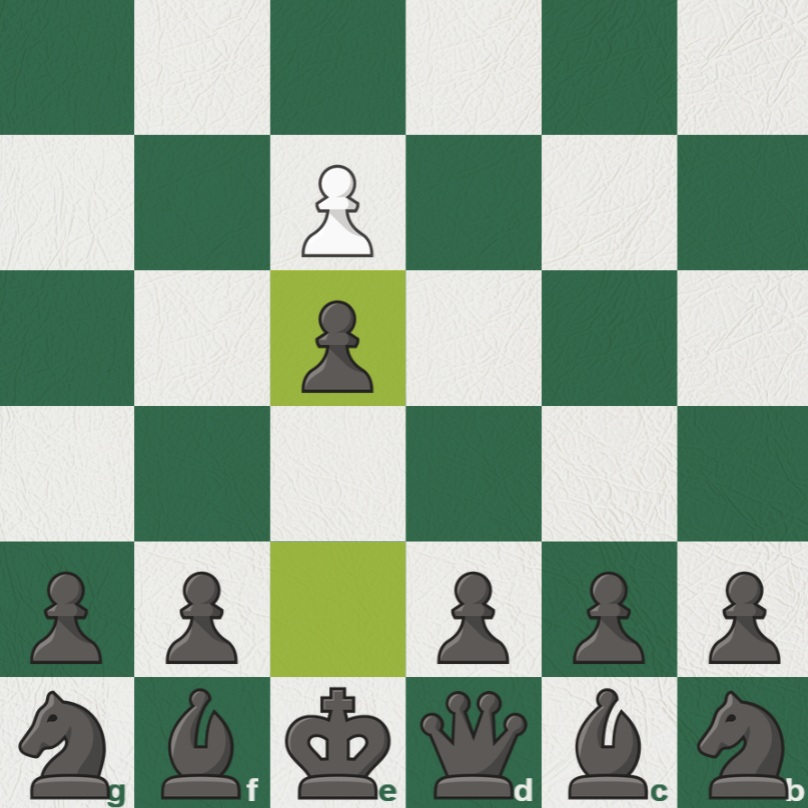

Chess openings are a series of pre-planned moves meant to put the player in a comfortable position without the need to calculate much.
White has 20 legal moves at the start of the game, most of which aren't that good. The number varies depending on who you ask, but many would consider five starting moves as the best.
1.e4
The most popular first move in the game, pawn to e4.
This move is played in more than 50% of games,
where white instantly grabs the centre while opening their bishop and queen
to control more squares.
Games where this is played tend to be more tactical, open, and fast-paced.
1.d4
A close runner-up in popularity, pawn to d4 is the next most popular first move,
played in about a quarter of all games.
White focuses more on gradually building up territorial control, playing comparatively
more defensive than 1.e4 to steadily improve the position before launching an attack on the kingside.
Games where this is played tend to be more positional and strategic.
1.Nf3
The next most popular first move, if you can even call it popular, is Nf3, often called the Reti or the Zukertort.
Despite being the 3rd most popular option, it's only played in around 5% of chess games, despite how "good" many claim it is.
1.Nf3 controls the centre from a distance before committing any pawns forward, to later respond with whatever black does in the centre.
Games where this played could go anywhere, depending on what both players want to do. It's a very flexible opening with many valid continuations.
1.c4
The English begins with pawn to c4.
This opening carries similar strategic ideas found in 1.d4 combined with similar flexible nature in 1.Nf3.
What's different, however, is black's pool of responses drop greatly; only three responses by black would
realistically be played, making this a great opening for shrinking black's control over the game.
1.g3
Called either the King's Fianchetto or the Hungarian, 1.g3 is a very passive first move, played with
the prospect of positioning the bishop on g2.
Despite gathered data supposing this opening is only played a staggering 2% of the time, finding
people that play this in both real life and online games is deceivingly easy, especially in low-rated games.
In essence, this is very similar to 1.Nf3. It contests the centre from a distance, and the game could skew any way depending on what both players want.
Since white has many different responses, what works best is situational. This will cover white's most likely first moves.
Against 1.e4

The most popular response, 1.e4 e5 is the most popular first two moves in chess.
Black responds to white's attempt to take the centre by bringing its own pieces into the centre as well.
Played around 20% of the time, the Sicilian Defence starts with 1...c5.
This opening aims to unbalance the position with asymmetry, leading to pressure on the queenside.
Black's game plan usually involves attacking white's queenside while consolidating their own kingside.
The Caro Kann, an opening growing more popular in recent years, involves 1...c6.
Black prepares to play pawn to d5 later, giving much needed support to an otherwise fragile central attacker.
Black mainly focuses on making useful pawn formations at the start, then developing their knights and bishops.
The last common mainstream response to 1.e4 is the French.
Similar to the Caro Kann, a pawn is pushed to later consolidate d5, but with the pushed pawn now closer
to the centre, most of the board usually gets locked down by the end of the opening, leading to a comparatively slower game.
Against 1.d4
1.d4 narrows what can be done initially. Only two popular options exist after 1.d4, the more common of which being 1...d5.
This move is played nearly 50% of the time and, similar to 1.e4 e5, is black's way to contest white's desire to immediately take the centre.
1...Nf6 is the Indian Game, and is a hypermodern approach to 1.d4.
Black doesn't commit a pawn just yet, rather they wait to see what white is doing to decide whether
to immediately fight for the centre directly or from afar with pieces. Overall, this is one of the most flexible responses for black.
Against 1.Nf3
Similar to 1.d4, what can be done is limited a lot. Being played roughly once every three times,
1...d5 instantly challenges white's prospects of stealing the centre later by fortifying the centre early.
The next most common response is Nf6.
Not much can be said for this move, black essentially copies white's hypermodern
ideas and maintains symmetry in the game.
Against 1.g3
1.g3, on the other hand, is harder to assign a guide as such an opening takes the game out of
theory very quickly. Out of the 12 most-played responses, only 5 were given an official and widely recognised name.
Black can play either e5 or d5 to contest the centre, and immediately steal territory while white is still preparing.
SPEEDQUIZ
Select whether the opening's name is correct or not as fast as possible. Get 5 correct to finish!
Uh oh! Something broke!
00
0/5
Why openings?
Openings benefit you in many ways. It establishes a strong foundation for the rest of the game, counters common early traps or blunders, and teaches good chess principles.
What do openings accomplish?
It depends on the exact opening, but the general idea is usually the same: control the centre, develop pieces, and get the king to a safe place.
The specific goals stressed over others differ greatly from opening to opening. Openings in essence are preparations to streamline the middlegame.
How many openings are there?
Given the definition of "a specific sequence of moves played at the start of a game", there would be billions.
Only considering the widely recognised and viable, though, the amount of realistic openings thin to around 500.